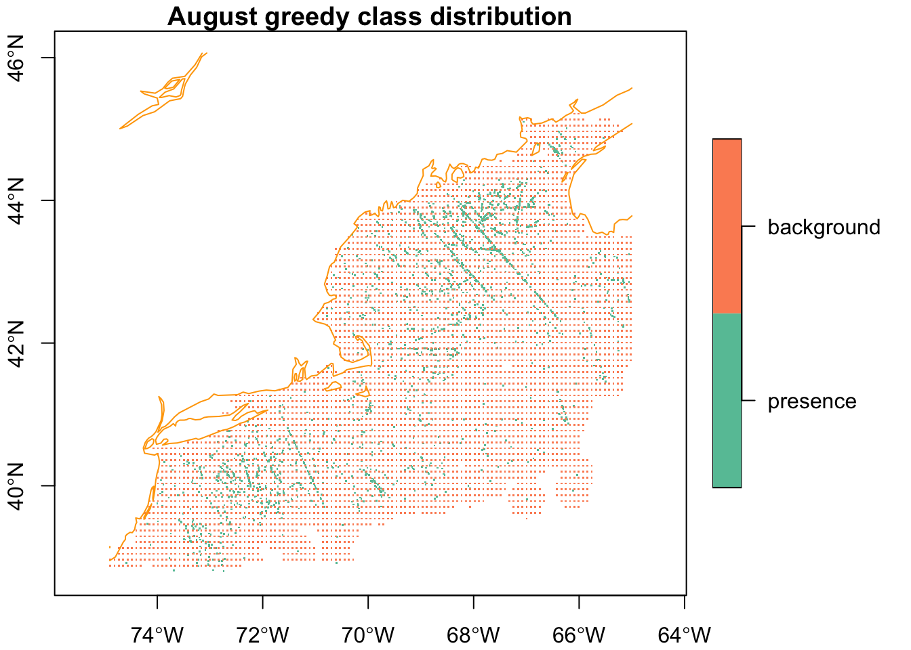
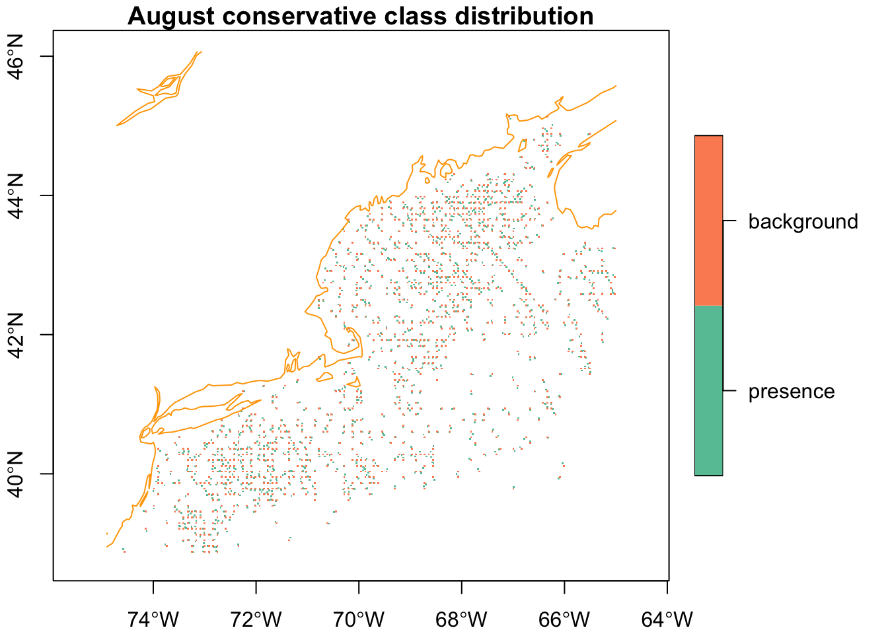
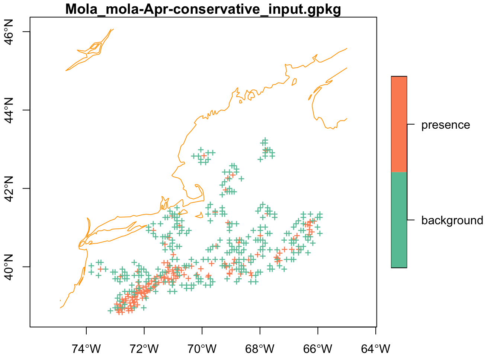

source("setup.R")Background
Traditional ecological surveys are systematic, for a given species survey data sets tell us where the species is found and where it is absent. Using an observational data (like OBIS) set we only know where the species is found, which leaves us guessing about where they might not be found. This difference is what distinguishes a presence-abscence data set from a presence-only data set, and this difference guides the modeling process.
When we model, we are trying to define the environs where we should expect to find a species as well as the environs we would not expect to find a species. We have in hand the locations of observations, and we can extract the environmental data at those locations. But to characterize the less suitable environments we are going to have to sample what is called “background”. We want these background samples to roughly match the regional preferences of the observations; that is we want to avoid having observations that are mostly over Georges Bank while our background samples are primarily around the Bay of Fundy.
1 Setup
As always, we start by running our setup function. Start RStudio/R, and relaod your project with the menu File > Recent Projects.
We also will need the Brickman mask and the observation data. Note that we are making a model for each month. Given that most Mola mola observations are in the summer, we filter our data to just one summer month, August.
coast = read_coastline()
obs = read_observations(scientificname = "Mola mola") |>
filter(month == "Aug")
db = brickman_database() |>
filter(scenario == "STATIC", var == "mask")
mask = read_brickman(db)We have two approaches to what happens next. The first is the greedy approach that say, gather together lots of observations and background points. Lot and lots! The second approach is much more conseravtive as it considers the value (or not!) of having replicate measurements at locations that share the same array cell.
2 The greedy approach - lots and lots of data
The greedy approach attempts to collect as many background and presence points as possible - with no vetting. The more the better!
2.1 Sample background
When we sample the background, we are creating the input for the model if we request that the observations (presences) are joined with the background.
Next we sample the background as guided by the density map. We’ll ask for 2x as many presences, but it is just a request. We also request that no background point be further than 30km (30000m) from it’s closest presence point.
greedy_input = sample_background(obs, mask,
n = 2 * nrow(obs),
class_label = "background",
method = c("dist_max", 30000),
return_pres = TRUE)Warning in sample_background(obs, mask, n = 2 * nrow(obs), class_label = "background", : There are fewer available cells for raster 'NA' (2459 presences) than the requested 4918 background points. Only 4818 will be returned.greedy_inputSimple feature collection with 7277 features and 1 field
Geometry type: POINT
Dimension: XY
Bounding box: xmin: -74.89169 ymin: 38.805 xmax: -65.02004 ymax: 45.21401
Geodetic CRS: WGS 84
# A tibble: 7,277 × 2
class geometry
* <fct> <POINT [°]>
1 presence (-72.8074 39.056)
2 presence (-71.343 40.52)
3 presence (-68.7691 41.52448)
4 presence (-67.79 43.32)
5 presence (-68.44324 42.61177)
6 presence (-72.4328 40.213)
7 presence (-71.8784 40.3569)
8 presence (-65.78 43.195)
9 presence (-70.5 42.767)
10 presence (-72.3024 40.1862)
# ℹ 7,267 more rowsYou may encounter a warning message that says, “There are fewer available cells for raster…”. This is useful information, there simply weren’t a lot of non-NA cells to sample from. Let’s plot this.
plot(greedy_input['class'],
axes = TRUE,
pch = ".",
extent = mask,
main = "August greedy class distribution",
reset = FALSE)
plot(coast, col = "orange", add = TRUE)
Hmmm, let’s tally the class labels.
count(greedy_input, class)Simple feature collection with 2 features and 2 fields
Geometry type: MULTIPOINT
Dimension: XY
Bounding box: xmin: -74.89169 ymin: 38.805 xmax: -65.02004 ymax: 45.21401
Geodetic CRS: WGS 84
# A tibble: 2 × 3
class n geometry
* <fct> <int> <MULTIPOINT [°]>
1 presence 2459 ((-65.07 42.68), (-65.067 42.65), (-65.05 42.583), (-65.05 4…
2 background 4818 ((-65.02004 42.25251), (-65.02004 42.74609), (-65.1023 42.66…Well, that’s imbalanced with a different number presences than background points. But, on the bright side, the background points are definitely in the region of observations.
3 The conservative approach - data thinning
The conservative approach says that the environmental covariates (that’s the Brickman data), or more specifically the resolution of the envirnomental covariates, should dictate the sampling. The core thought here is that it doesn’t produce more or better information to have replicate measurements of either presences or In this approach we eliminate (thin) presences so that we have no more than one per covariate array cell.
dim_before = dim(obs)
cat("number of rows before thinning:", dim_before[1], "\n")number of rows before thinning: 2459 obs = thin_by_cell(obs, mask)
dim_after = dim(obs)
cat("number of rows after thinning:", dim_after[1], "\n")number of rows after thinning: 1204 So, that dropped quite a few! Now let’s take a look at the background, but this time we’ll try to match the count of presences.
conservative_input = sample_background(obs, mask,
n = 2 * nrow(obs),
class_label = "background",
method = c("dist_max", 30000),
return_pres = TRUE)
count(conservative_input, class)Simple feature collection with 2 features and 2 fields
Geometry type: MULTIPOINT
Dimension: XY
Bounding box: xmin: -74.89169 ymin: 38.8678 xmax: -65.02004 ymax: 45.1333
Geodetic CRS: WGS 84
# A tibble: 2 × 3
class n geometry
* <fct> <int> <MULTIPOINT [°]>
1 presence 1204 ((-65.07 42.68), (-65.05 42.583), (-65.067 42.617), (-65.19 …
2 background 2408 ((-65.02004 42.74609), (-65.1023 42.66383), (-65.02004 42.66…plot(conservative_input['class'],
axes = TRUE,
pch = ".",
extent = mask,
main = "August conservative class distribution",
reset = FALSE)
plot(coast, col = "orange", add = TRUE)
4 Greedy or Conservative?
It’s not possible to know which is correct at this point; we can only know after we produce models (and maybe predictions.) So for now, perhaps we keep both.
5 Model input per month
So, how do we go about producing a madel input data set for each month? For that we need to iterate; if iteration is new to you please be sure to check out our iteration tutorial. We are going to make a small function that handles creating the two types of input (greedy and conservative) for each month. We’ll use a for-loop to iterate over the months of the year: Jan, Feb, …, Nov, Dec.
Note
Heads up! Your assignment will be to use this function in an lapply() function that will iterate over the months for you in lieu of a for-loop. More on that later…
5.1 A function we can reuse
Here we make a function that needs at least three arguments: the complete set of observations, the mask used for sampling (and possibly thinning) and the month to filter the observations. The pseudo-code might look like this…
for a given month
filter the obs for that month
make the greedy model input by sampling the background
save the greedy model input
thin the obs
make the conservative model input by sampling background
save the conservative model input
return a list the greedy and conservative model inputsPhew! That’s a lot of steps. To manually run those steps 12 times would be tedious, so we roll that into a function that we can reuse 12 times instead.
This function will have a name, make_model_input_by_month. It’s a long name, but it makes it obvious what it does. First we start with the documentation.
#' Builds greedy and conservative model input data sets for a given month
#'
#' @param mon chr the month abbreviation for the month of interest ("Jan" by default)
#' @param obs table, the complete observation data set
#' @param raster stars, the object that defines the sampling space, usually a mask
#' @param species chr, the name of the species prepended to the name of the output files.
#' (By default "Mola mola" which gets converted to "Mola_mola")
#' @param path the output data path to store this data (be default "model_input")
#' @param min_obs num this sets a threshold below which we wont try to make a model. (Default is 3)
#' @return a named two element list of greedy and conservative model inputs - they are tables
make_model_input_by_month = function(mon = "Jan",
obs = read_observations("Mola mola"),
raster = NULL,
species = "Mola mola",
path = data_path("model_input"),
min_obs = 3){
# the user *must* provide a raster
if (is.null(raster)) stop("please provide a raster")
# filter the obs
obs = obs |>
filter(month == mon[1])
# check that we have at least some records, if not enough then alert the user
# and return NULL
if (nrow(obs) < min_obs){
warning("sorry, this month has too few records: ", mon)
return(NULL)
}
# make sure the output path exists, if not, make it
make_path(path)
# make the greedy model input by sampling the background
greedy_input = sample_background(obs, raster,
n = 2 * nrow(obs),
class_label = "background",
method = c("dist_max", 30000),
return_pres = TRUE)
# save the greedy data
filename = sprintf("%s-%s-greedy_input.gpkg",
gsub(" ", "_", species),
mon)
write_sf(greedy_input, file.path(path, filename))
# thin the obs
obs = thin_by_cell(obs, raster)
# make the conservative model
greedy_input = sample_background(obs, raster,
n = 2 * nrow(obs),
class_label = "background",
method = c("dist_max", 30000),
return_pres = TRUE)
# save the conservative data
filename = sprintf("%s-%s-conservative_input.gpkg",
gsub(" ", "_", species),
mon)
write_sf(greedy_input, file.path(path,filename))
# make a list
r = list(greedy = greedy_input, conservative = conservative_input)
# return, but disable automatic printing
invisible(r)
}6 Reusing the function in a loop
More phew! But that is it! Now we use a for loop to run through the months, calling our function each time. Happily, the built-in variable month.abb has all of the month names in order.
for (this_month in month.abb){
result = make_model_input_by_month(this_month,
obs = read_observations(scientificname = "Mola mola"),
raster = mask,
species = "Mola mola",
path = data_path("model_input"),
min_obs = 3)
}Warning in sample_background(obs, raster, n = 2 * nrow(obs), class_label = "background", : There are fewer available cells for raster 'NA' (2325 presences) than the requested 4650 background points. Only 3882 will be returned.Warning in sample_background(obs, raster, n = 2 * nrow(obs), class_label = "background", : There are fewer available cells for raster 'NA' (2459 presences) than the requested 4918 background points. Only 4818 will be returned.7 Listing the output files
You can always look into you output directory to see if the files we made, but even better might be to use the computer to list them for you. If your species is found in sufficient numbers year round, you’ll have 24 files: 12 months x 2 approaches (greedy vs conservative)
path = data_path("model_input")
files = list.files(path, full.names = TRUE)
files [1] "/Users/ben/Dropbox/code/projects/ColbyForecasting_data/2024/ben/model_input/Mola_mola-Apr-conservative_input.gpkg"
[2] "/Users/ben/Dropbox/code/projects/ColbyForecasting_data/2024/ben/model_input/Mola_mola-Apr-greedy_input.gpkg"
[3] "/Users/ben/Dropbox/code/projects/ColbyForecasting_data/2024/ben/model_input/Mola_mola-Aug-conservative_input.gpkg"
[4] "/Users/ben/Dropbox/code/projects/ColbyForecasting_data/2024/ben/model_input/Mola_mola-Aug-greedy_input.gpkg"
[5] "/Users/ben/Dropbox/code/projects/ColbyForecasting_data/2024/ben/model_input/Mola_mola-Dec-conservative_input.gpkg"
[6] "/Users/ben/Dropbox/code/projects/ColbyForecasting_data/2024/ben/model_input/Mola_mola-Dec-greedy_input.gpkg"
[7] "/Users/ben/Dropbox/code/projects/ColbyForecasting_data/2024/ben/model_input/Mola_mola-Feb-conservative_input.gpkg"
[8] "/Users/ben/Dropbox/code/projects/ColbyForecasting_data/2024/ben/model_input/Mola_mola-Feb-greedy_input.gpkg"
[9] "/Users/ben/Dropbox/code/projects/ColbyForecasting_data/2024/ben/model_input/Mola_mola-Jan-conservative_input.gpkg"
[10] "/Users/ben/Dropbox/code/projects/ColbyForecasting_data/2024/ben/model_input/Mola_mola-Jan-greedy_input.gpkg"
[11] "/Users/ben/Dropbox/code/projects/ColbyForecasting_data/2024/ben/model_input/Mola_mola-Jul-conservative_input.gpkg"
[12] "/Users/ben/Dropbox/code/projects/ColbyForecasting_data/2024/ben/model_input/Mola_mola-Jul-greedy_input.gpkg"
[13] "/Users/ben/Dropbox/code/projects/ColbyForecasting_data/2024/ben/model_input/Mola_mola-Jun-conservative_input.gpkg"
[14] "/Users/ben/Dropbox/code/projects/ColbyForecasting_data/2024/ben/model_input/Mola_mola-Jun-greedy_input.gpkg"
[15] "/Users/ben/Dropbox/code/projects/ColbyForecasting_data/2024/ben/model_input/Mola_mola-Mar-conservative_input.gpkg"
[16] "/Users/ben/Dropbox/code/projects/ColbyForecasting_data/2024/ben/model_input/Mola_mola-Mar-greedy_input.gpkg"
[17] "/Users/ben/Dropbox/code/projects/ColbyForecasting_data/2024/ben/model_input/Mola_mola-May-conservative_input.gpkg"
[18] "/Users/ben/Dropbox/code/projects/ColbyForecasting_data/2024/ben/model_input/Mola_mola-May-greedy_input.gpkg"
[19] "/Users/ben/Dropbox/code/projects/ColbyForecasting_data/2024/ben/model_input/Mola_mola-Nov-conservative_input.gpkg"
[20] "/Users/ben/Dropbox/code/projects/ColbyForecasting_data/2024/ben/model_input/Mola_mola-Nov-greedy_input.gpkg"
[21] "/Users/ben/Dropbox/code/projects/ColbyForecasting_data/2024/ben/model_input/Mola_mola-Oct-conservative_input.gpkg"
[22] "/Users/ben/Dropbox/code/projects/ColbyForecasting_data/2024/ben/model_input/Mola_mola-Oct-greedy_input.gpkg"
[23] "/Users/ben/Dropbox/code/projects/ColbyForecasting_data/2024/ben/model_input/Mola_mola-Sep-conservative_input.gpkg"
[24] "/Users/ben/Dropbox/code/projects/ColbyForecasting_data/2024/ben/model_input/Mola_mola-Sep-greedy_input.gpkg" 8 Reading the files
We know that each file should have a table with spatial information included. Let’s read one back and plot it.
x = read_sf(files[1])
filename = basename(files[1])
plot(x['class'],
axes = TRUE,
pch = "+",
extent = mask,
main = filename,
reset = FALSE)
plot(coast, col = "orange", add = TRUE)
9 Recap
We have prepared what we call “model inputs”, in particular for Mola mola, by selecting background points using two different approaches: greedy and conservative. There are lots of other approaches, too, but for the sake of learning we’ll settle on just these two. We developed a function that will produce our model inputs for a given month, and saved them to disk. Then we read at least one back and showed that we can restore these from disk.
Coding Assignment
Use the iterations tutorial to apply your make_model_input_by_month() for each month.
You’ll know you have done it correctly if your result is a list filled with lists of greedy-conservative tables.
And here we add one challenge… ::: {.callout-note appearance=“simple”}
10 Challenge
Create a function to read the correct model input when given the species, month and approach.
Use the menu option File > New File > R Script to create a blank file. Save the file (even though it is empty) in the “functions” directory as “model_input.R”. Use this file to build a function (or set of functions) that uses this set of arguments. :::
#' Reads a model input file given species, month, approach and path
#'
#' @param scientificname chr, the species name
#' @param mon chr month abbreviation
#' @param approach chr, one of "greedy" or "conservative"
#' @param path chr the path to the data directory
read_model_input = function(scientificname = "Mola mola",
mon = "Jan",
approach = "greedy",
path = data_path("model_input")){
# your part goes in here
}:::